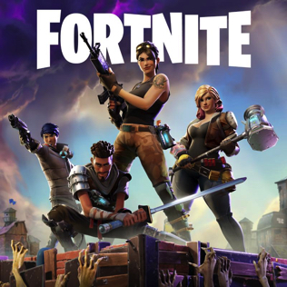
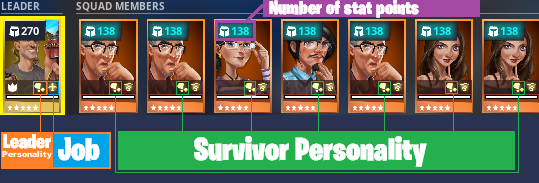

The Basics of Fortnite Save The World
By Jack R. Franks

Table Of Contents
- Heroes
- Weapons
- Missions
- Power Level
- Resources
Heroes
Heroes in Fortnite STW are what determine your playstyle the most, there are 4 different types of heroes in STW.
- Soldiers
- Constructors
- Ninjas
- outlanders
Soldiers primary playstyle is using either their minigun ability or making their assault rifles more powerful.
Constructors main job is to make your buildings more powerful, they can eithe do this by increasing the hitpoints of your builds, or by making your traps more effective against the husks.
Ninjas have two different playstyles, the first is using melee weapons such as katanas or swords.
Their second playstyle is to use bows because one ninja has the ability to make arrows chain to secondary targets.
Outlanders playstyle is best for farming resources because of their increased pickaxe harvest speed, they also have the ability to punch, instantly breaking any obstacle.
Weapons
There are many different classes of weapons in STW, they are all fairly competetive depending on what build you use.
- AR
- SMG
- Pistol
- Rocket Launcher
- Sniper
- Melee
Missions
There is two main categories of missions, ones that require Defending an objective, and ones that don't.
Defense
- Defend the Atlas
- Ride the Lighting
- Defend/Evacuate The Shelter
- Deliver the Bomb
- Retrieve the Data
No Defense
- Resupply
- Build the Radar
- Rescue the Survivors
- Destroy the Encampments
- Eliminate and Collect
Power Level
Power level is mostly determined by the level of your survivors, rarity of your survivors, and personality of your survivors. High power level survivor squads use legendary survivors with the
same personality as the leader.

Resources
Resources are very important in STW because they are what allow you to craft weapons, traps, as well as upgrading the power level of your heroes, weapons, traps, and survivors.
Resource levels change depending on the power level of the mission your playing. Higher quality materials are required for higher quality items. Wood, stone, and metal are always the same across
levels, the only thing that changes is your ability to increase the health of the buildings at the cost of more materials.